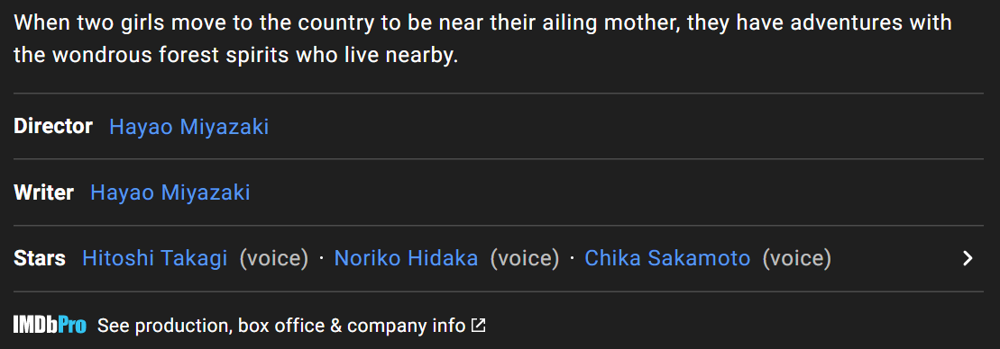

In IMDb...

There is a Totoro in everyone’s heart.
Childhood will never disappear.
Love
is the most beautiful possession...
There is a Totoro in everyone’s heart.
Childhood will never disappear.
Love
is the most beautiful possession...
Two young girls, 10-year-old Satsuki and her 4-year-old sister Mei, move into a house in the country with their father to be closer to their hospitalized mother.
Satsuki and Mei discover that the nearby forest is inhabited by magical creatures called Totoros (pronounced toe-toe-ro). They soon befriend these Totoros, and have several magical adventures...
A delightful, touching, timeless classic!
Featuring stunning animation, endearing personable characters, and a heart-tugging storyline
that's simple, enchanting, and even dramatic. Sometimes you feel like you're not watching an
animated children's movie, because the characters (particularly the children) and the
storyline seem so realistic. There's no bad guy, no song numbers, and no references to
pop-culture. Most cartoons (especially Disney) feature these and it gets old and routine.
Here we have a break from all of that and get a real masterpiece.
A Totoro for everyone
Or one for two would also be cool. Now
I'm not sure what the Totoro is or was based on. But I know when it comes to imagination
Studio Ghibli had an abundance of it. Which is present here too. You have to suspend
disbelief and let fantasy reign. Your inner kid will thank you for it. Another reviewer says
this movie restores his faith in humanity in him. There are many things one can take from
watching this, but I would think this is one of the best takes anyone can get. Funny,
playful, dreamy, but still coherent throughout, this really takes your mind of things.

Awards
Box Office
$3,700,000 (estimated)
$2,250,213
$539,245Sep 30, 2018

Top Cast
as Totoro(voice)
as Satsuki(voice)
as Mei(voice)